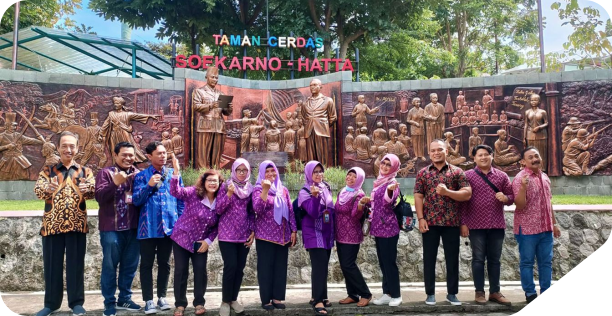
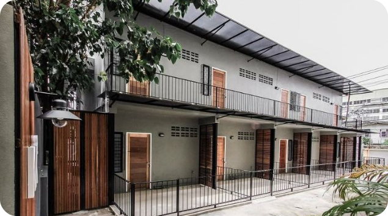

Tentang Website ini
Pendataan Kos Sukorame
Kelurahan Sukorame merupakan salah satu wilayah dengan jumlah rumah kost yang cukup banyak...

Apa Kegunaan Website ini?
Website ini berguna sebagai sarana pendataan rumah kost...

Data Kami Resmi & Terverifikasi
Seluruh data kost yang ditampilkan dalam sistem ini bersumber langsung dari Kelurahan Sukorame...